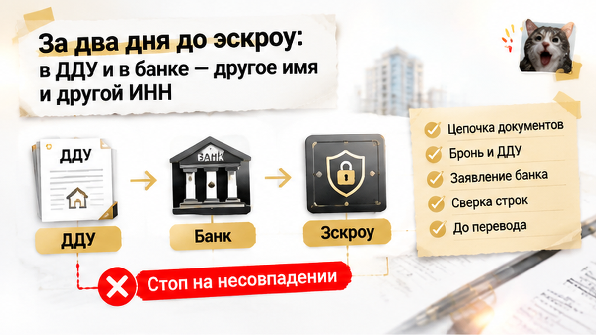
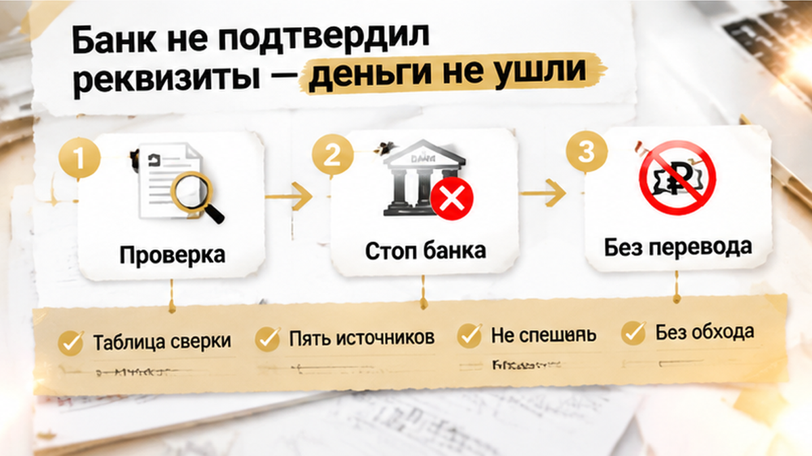
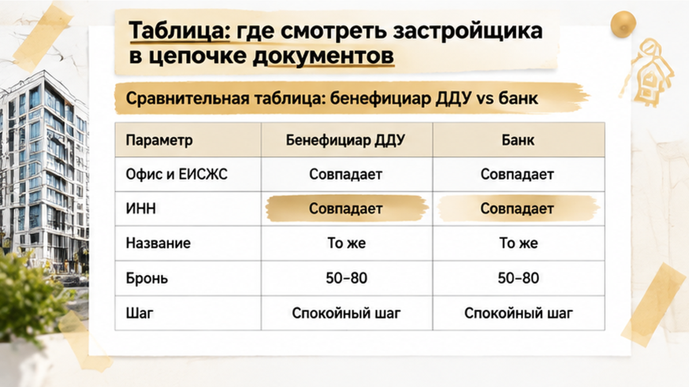

За 2 дня до открытия эскроу банк остановил сделку по новостройке в Тюмени: в черновике ДДУ всплыло чужое юрлицо с другим ИНН, а на счёт так и не ушли ни рубля из брони в 50–80 тысяч. До этого бронь, ипотечное одобрение и проектная декларация сходились, и в офисе называли одного застройщика. В банковском пакете уже фигурировала другая организация — менеджер списал это на техническую ошибку и торопил подписать. Семья отказалась переводить деньги «пока поправят строки».
Семья выбирала квартиру в тюменской новостройке с ипотекой. Квартиру забронировали, банк одобрил кредит, а в материалах по объекту фигурировала одна и та же компания. В брони было указано юридическое лицо, которое покупатели увидели и в Единой информационной системе жилищного строительства.
Бронь легко принять за почти формальный шаг: внесли примерно 50–80 тысяч рублей, застройщик закрепил квартиру, банк дал ипотечное одобрение — дальше, кажется, остаются только подпись ДДУ и открытие эскроу. Но именно перед этим нужно остановиться: в каждом документе должно быть одно и то же юридическое лицо.
В рекламе, переписке менеджера и презентации объекта может повторяться одно название, а договор при этом готовит другая организация. Разницу легко пропустить: название иногда отличается одной буквой, а иногда меняются ИНН и ОГРН.
Покупатели не переоформляли сделку самостоятельно и не переводили деньги на обычный счёт застройщика в обход эскроу. До подписания ДДУ у них оставалась возможность остановиться и задать вопросы, пока спор касался документов, а не уже перечисленной крупной суммы.
В офисе покупателям показывали юридическое лицо, совпадавшее с данными в проектной декларации и материалах бронирования. На этом участке цепочки всё выглядело ровно: компания, объект и будущая сделка складывались в одну линию.
Но одинаковое название ещё не доказывает, что в документах стоит одна и та же организация. Нужно смотреть полное наименование, ИНН и ОГРН: именно они показывают, перед вами та же компания или уже другая.
Проблема обнаружилась, когда покупатели получили документы для следующего шага. В черновике ДДУ появилось другое юридическое лицо. Отличались и ИНН с ОГРН — поэтому речь уже не шла о безобидной замене строки в шапке договора.
Эскроу в такой сделке — не просто отдельный счёт, куда нужно успеть положить деньги. Банк сопоставляет договор, объект, участников сделки и реквизиты платежа. Если появляется другая организация, зачисление могут остановить, пока документы не приведут к одному набору реквизитов.
В офисе расхождение объяснили технической ошибкой. Возможно, так и было при подготовке шаблона. Но для покупателя последствие оставалось тем же: подписывать договор с другим ИНН и надеяться, что всё исправят после перевода денег, было рискованно.

До открытия эскроу оставалось два дня, когда семья получила черновик ДДУ и документы для банка. В брони, ЕИСЖС и офисе застройщика указывалось одно юридическое лицо, но в договоре стояла другая компания — с иными ИНН и ОГРН.
Почти те же реквизиты оказались и в заявлении на открытие эскроу. В одной части сделки фигурировала компания из брони и проектной декларации, а в ДДУ и банковских бумагах — другое юридическое лицо. Похожие названия не меняли главного: идентификаторы указывали на разные организации.
Покупатели показали расхождение сотрудникам офиса. Им ответили, что это техническая ошибка и документы исправят. Но пока исправленного ДДУ не было, подписывать договор «с расчётом на потом» было рискованно: ипотека уже одобрена, дата назначена, до эскроу оставались считаные дни.
Эскроу — не просто счёт, куда нужно успеть отправить деньги. Банк сопоставляет договор, участников сделки и реквизиты платежа. Ошибка в юридическом лице может остановить всю операцию.

Банк-эскроу не подтвердил данные и остановил зачисление. Это не означало, что проблемной признали всю новостройку: банк не смог провести конкретную операцию, поскольку в ДДУ и заявке оказалось юрлицо с другим ИНН и ОГРН.
Для семьи результат был неприятным, но спасительным: деньги на эскроу не ушли. Покупатели не подписали спорный вариант и не стали переводить средства на обычный счёт застройщика ради срока. Бронь примерно на 50–80 тысяч рублей могла оказаться под угрозой, но это не то же самое, что отправить крупную сумму по неподтверждённым реквизитам.
В офисе расхождение по-прежнему называли технической ошибкой. Но банку нужны документы, где совпадают сторона ДДУ, объект и идентификаторы компании. Пока этого не было, перевод не состоялся.
Семья остановилась: не внесла деньги, не подписала договор и запросила исправленные документы. Именно здесь у покупателей ещё оставался выбор. Если бы они сначала отправили средства по реквизитам из письма или на обычный расчётный счёт, вернуть сделку в понятную схему было бы сложнее.
Банк стал дополнительным контролем, но полагаться только на него нельзя. ИНН и ОГРН лучше самостоятельно сверять в брони, проектной декларации, ДДУ и документах на открытие эскроу. Если юрлицо менялось, это должно подтверждаться документами, а не фразой «так получилось».
В этой истории проблема обнаружилась не на вывеске и не в рекламе. В офисе, в брони и в проектной декларации фигурировало одно юрлицо. Другое появилось там, где покупатель уже ждёт подписи: в черновике ДДУ и документах для банка.
Поэтому перед открытием эскроу нужно смотреть не только на название компании, но и на её ИНН и ОГРН. Названия могут отличаться одной буквой, а юридически это уже разные организации. Другой ИНН — не мелкая опечатка, которую безопасно исправить после перевода денег.
Пройдите цепочку по порядку: бронь → декларация в ЕИСЖС → черновик ДДУ → заявление банка на эскроу. На каждом шаге выписывайте идентификатор продавца в одну строку и сравнивайте с предыдущим листом — так расхождение видно до перевода.
Если в одном документе стоит другая компания, запросите письменное объяснение и исправленные бумаги. Устного «это техническая ошибка» недостаточно: пока в ДДУ и банковских документах остаются другие реквизиты, непонятно, кто принимает обязательства и кому банк должен зачислить деньги.
Здесь важно разделять две проверки: кто является застройщиком и стороной ДДУ, а также совпадает ли это юрлицо с данными, по которым открывают и пополняют эскроу. Само наличие эскроу не отменяет проверки участников сделки.
Сведения о компании можно посмотреть в официальных реестрах. Но общий владелец или одна группа компаний не превращают разные ИНН в одну организацию. Если в офисе говорят «это всё наши компании», попросите показать юридическое основание и привести документы к одному набору реквизитов.
Банк проверяет свою часть цепочки — документы и данные для открытия и пополнения эскроу. Но рассчитывать на эту проверку как на единственную защиту не стоит. В описанном случае именно банк остановил зачисление, однако заметить расхождение до обращения в банк безопаснее, чем разбираться с ним после перевода.
Пока ИНН и ОГРН не совпали в ключевых документах, ДДУ не подписывают, а деньги не переводят ни на эскроу по спорным реквизитам, ни тем более на обычный расчётный счёт. Если бронь заканчивается, лучше письменно запросить продление, чем успевать любой ценой.
Похожую ситуацию с заменой юрлица и новым ДДУ разбирали здесь: смена юрлица не должна оставаться только устным объяснением. А расхождение между обещаниями на этапе брони и проектной декларацией — здесь: что смотреть в декларации до внесения денег.
До перевода на эскроу можно спокойно сверить ИНН в брони, декларации и банковском пакете. Напишите в Telegram или MAX — начнём с трёх строк в документах, а не с обещания «подпишите, потом поправим».
Если банк уже показал стоп по реквизитам, это не приговор сделке, а сигнал сверить пакет. Иногда достаточно исправленного ДДУ и письма застройщика; иногда безопаснее сменить лот, чем гнаться за сроком брони.
| Документ или источник | Что сверить | Что делать при расхождении |
|---|---|---|
| Бронь | Кто указан продавцом и куда уходит платёж за бронь | Не считать бронь подтверждением правильности будущего ДДУ. Запросить исправленный документ или письменное объяснение. |
| Проектная декларация ЕИСЖС | Кто указан застройщиком по конкретному проекту | Сопоставить с ДДУ: совпадает ли организация в проекте с договором. |
| Черновик ДДУ | Сторона-застройщик и приложение с реквизитами эскроу | Не подписывать документ с другим юрлицом, пока не подготовлена корректная версия и не объяснено основание изменений. |
| Заявление на открытие эскроу | Кто указан участником расчётов и совпадают ли данные с ДДУ | Задать вопросы банку до внесения денег. Не подменять исправление документов переводом на другой счёт. |
| Реквизиты эскроу | Наименование и ИНН получателя, номер счёта и банк-эскроу | Не переводить деньги на обычный расчётный счёт «в обход» эскроу, если это предлагают как быстрый способ закрыть сделку. |
Сверяли бы ИНН застройщика в брони, проектной декларации и реквизитах эскроу построчно — до подписи?
Если застройщик прислал исправленный пакет, читайте его целиком и сохраняйте переписку — до подписи у вас ещё есть ручка, пока бронь не превратилась в спешку.

Материал не заменяет индивидуальную юридическую консультацию.